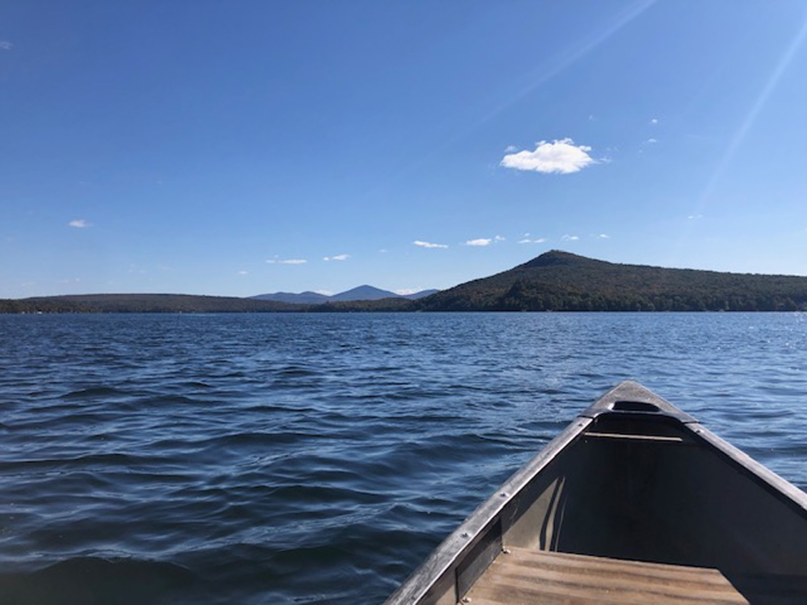
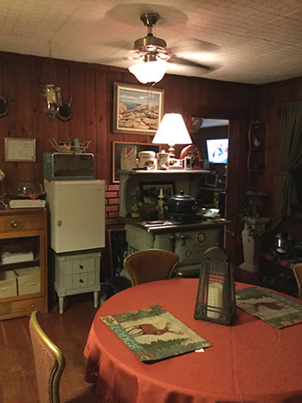
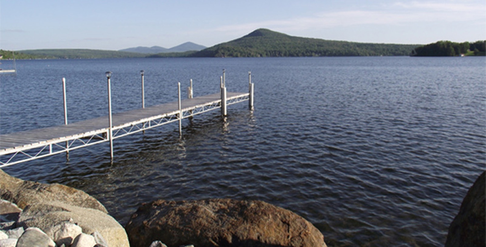
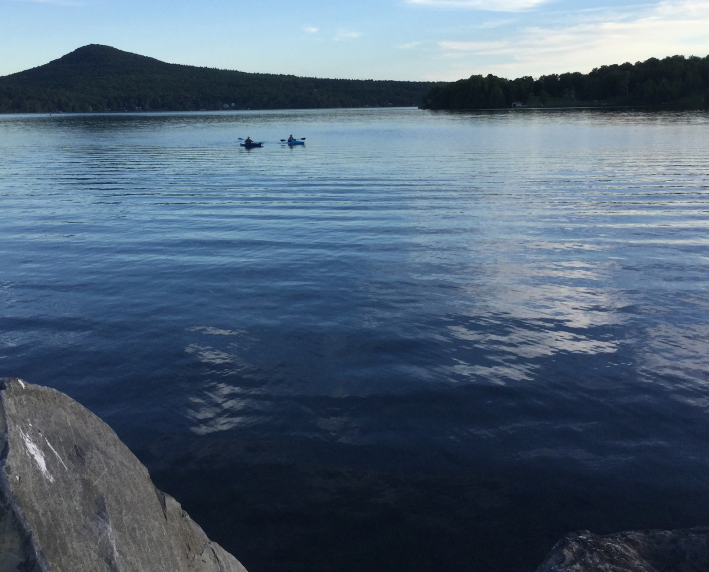
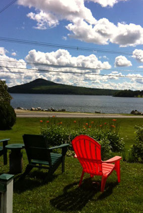
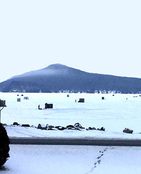
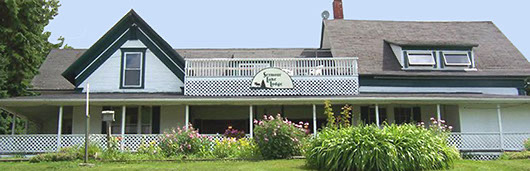

Continental breakfast
Every morning from 7 to 9 am, plus full kitchen privileges in the community kitchen.

Morgan · Vermont’s Northeast Kingdom · open year round
Comfortable country lodging in our 19th-century farmhouse on Lake Seymour: nine guest rooms, a private guest apartment, a half-mile of sandy beach and kayaks for your use.
19th-century farmhouse accommodations
The Seymour Lake Lodge is a casual country lodge with the comforts of home, decorated with 19th- and 20th-century antiques and plenty of vintage character.
During the warmer months, enjoy the outdoor porch overlooking Lake Seymour and the surrounding mountain ranges. When it’s cold outside, sit by one of several wood stoves and read a good book from our modest library. Guests share our first-floor full kitchen, and the guest apartment has a kitchen of its own.
See the rooms & rates

Your stay
Every morning from 7 to 9 am, plus full kitchen privileges in the community kitchen.
For your use on Lake Seymour, right across the road. Campfire and BBQ grill too.
A game room, board games, TV & movies and a shelf of good books for cold evenings.
Rooms have a private entrance and alarm clock. WiFi, telephone and a washer/dryer on site.

On Lake Seymour
Lake Seymour is a glacial lake and the second largest lake in Vermont: 3 miles long, 2 miles wide and shaped like the number 7. Native American tribes named it Namagonic, meaning “salmon trout spearing place”.
In spring, summer and fall, enjoy boating on its pristine waters along with fishing, biking, hiking and exploring. Local guides are more than willing to help with hunting or fishing trips. In the warmer months add swimming: many believe Lake Seymour is the cleanest lake in Vermont.

Swim at the half-mile public beach next door, paddle out in a kayak, or fish the lake known for excellent fishing.

In October the sugar maple, birch and beech turn the mountains of Vermont’s northeast an unusual, breathtaking array of colors.

When the lake freezes solid, residents and visitors alike cross it on cross-country skis and snowshoes, and go ice fishing.
While you’re here
Morgan is about 2.5 hours from Montreal, 3.4 hours from Boston, 4 hours from Hartford and 6 hours from New York, and just 25 minutes from the Canadian border. Lake Seymour sits on major New England bike touring routes and snowmobile trails.

Year-round resort with skiing, a waterpark, PGA golf course, tram, restaurants and live entertainment.
Year-round mountain resort with skiing and mountain bike trails, restaurants and live entertainment.
Trail system open year round for mountain biking, winter fat biking and cross-country skiing.
A National Natural Landmark, considered one of the most beautiful lakes in America.
Vermont’s snowmobile trail system, with over 5,000 miles of interconnecting trails.
Non-profit education, research and conservation organization with summer and winter camps and outdoor events.
On the lodge’s list of area attractions.
Local auctions of estates, real estate, farm equipment, art and memorabilia.
Guest lodging information
Questions about pets, the apartment or a special request? Call 802-895-2563 or email info@lakeseymourlodge.com.
Check-in is after 2 pm. Check-out is before 11 am.
A continental breakfast is available every morning from 7 to 9 am, and guests have full use of the first-floor kitchen.
Well-behaved pets are permitted within reason. Please contact us with details before your arrival.
Yes, the lodge is suitable for children, and the lake makes it a great place to bring the kids for swimming, boating and winter sports.
If a reservation is not canceled within 48 hours of the check-in date, a $25.00 cancellation fee will be applied. Reservations are made with a valid credit card; all major cards are accepted.
No smoking inside, please smoke outside only.